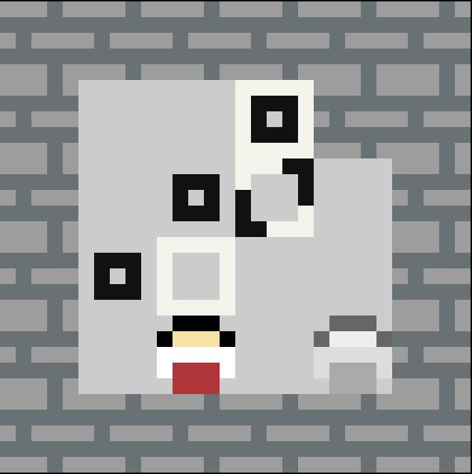
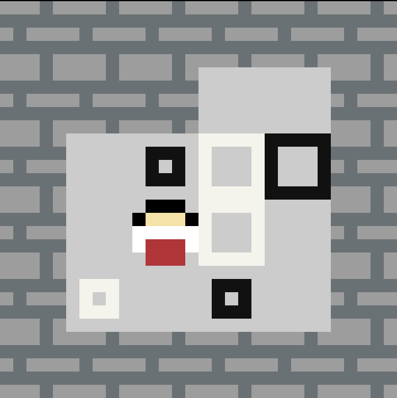
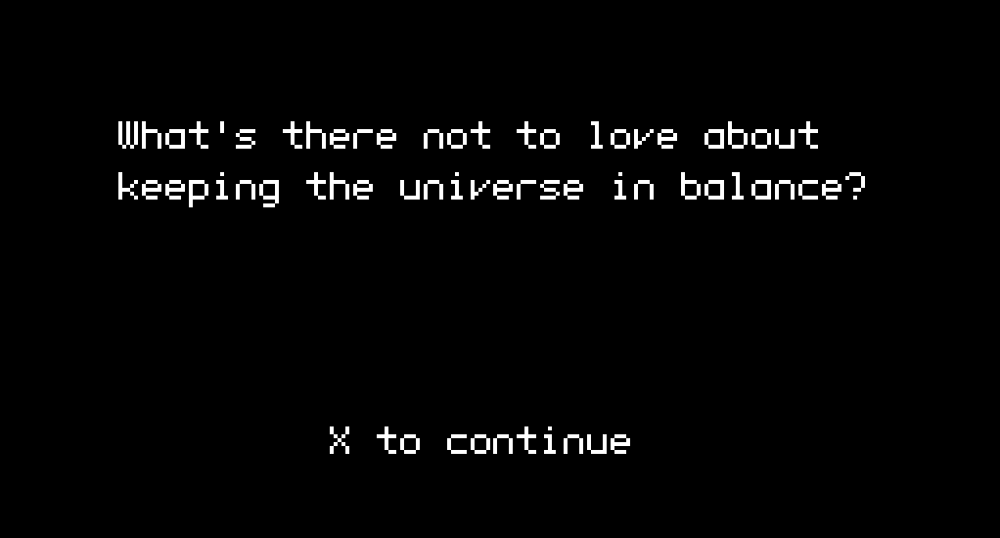

Mikoban is a Sokoban variant that was created between family events for the 2023 Oxford University Computing Society Winter Game Jam, and placed first (out of two entries).
 
Mikoban was built in Auroriax’ fork of increpare’s PuzzleScript, which is a highly specialized language specifically designed for building mechanics-centric pixel-style puzzle games that you can run in your browser.
It’s also intuitive and well-designed; learning the language to a comfortable level took under a day. The rest of the time was spent creating and testing levels with some help from friends and family.
In memoriam of Zachary Polansky, aka Jack Lance.
